Claude leyó las fotos del anuncio y el plano del arquitecto, escribió el código que modela cada pared y cada mueble, comparó sus renders contra las fotos hasta acercarse, y terminó en Unreal Engine 5 con luz trazada como en cine.
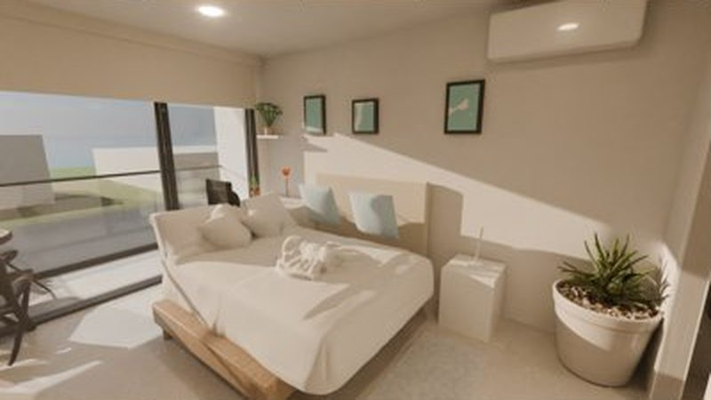
Paredes y muebles salen del código. La distribución ya es la real; los objetos aún son cajas.
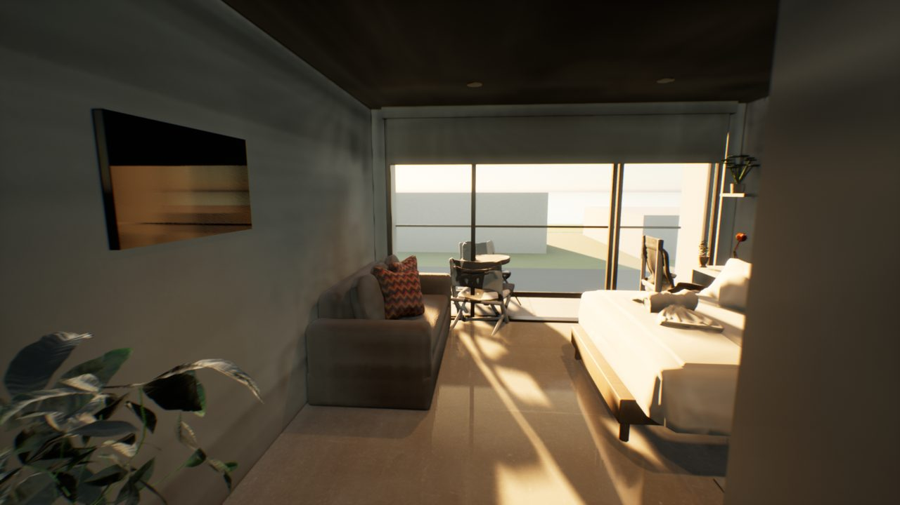
El modelo pasa a Unreal Engine 5.8. Luz en tiempo real: 3 minutos por video.
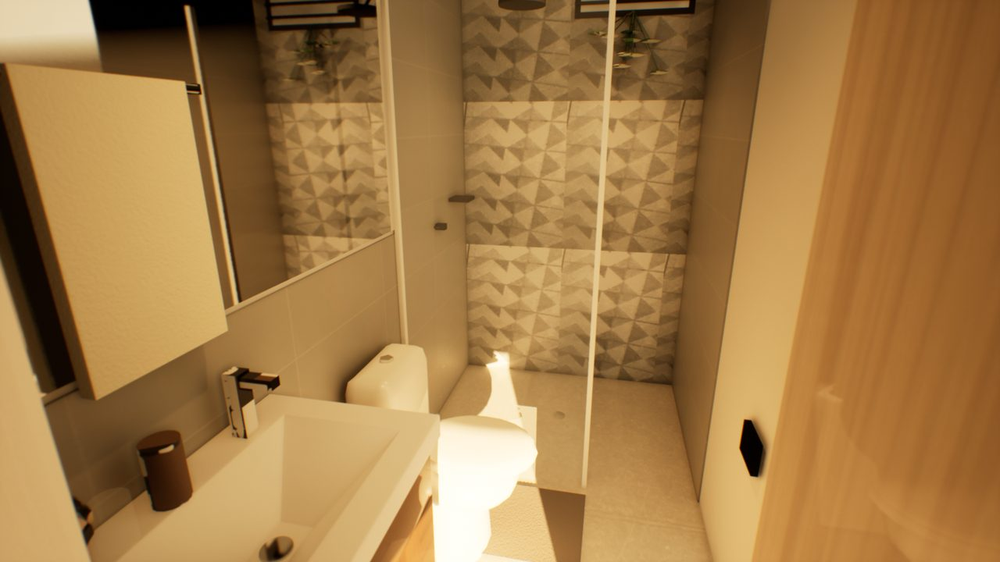
Cocina, baño y lavandería rehechos foto por foto: baldosas, grifería, estufa, nevera.
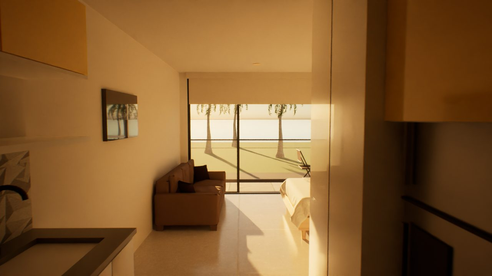
Luz calculada rayo por rayo, con denoiser de Intel. Entran sofá y palmeras de Fab.
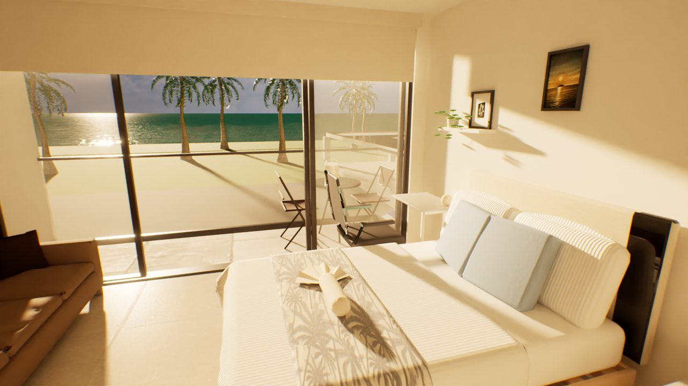
Una toma continua, cielo con nubes reales, mar con oleaje y luz cálida de tarde.
Cada uno es un render real de ese momento del proyecto, sin retocar. Se nota cómo la luz, los materiales y la cámara van cambiando.
La distribución sale del plano y los muebles son genéricos. Ya hay recorrido de cámara.
Gabinetes amarillos, cocina y baño ajustados contra las fotos. Render con Cycles.
Mismo modelo en Unreal Engine 5.8, con sol de tarde y luz en tiempo real. 3 minutos de render.
Cama, cuadros, estufa, baño y lavandería rehechos uno por uno contra las fotos.
Luz trazada de verdad, pero con grano y quemado. Tardó 3 horas: el error que más enseñó.
Denoiser de Intel y exposición corregida. Entran el sofá, las palmeras y los carros.
Una sola toma de 41 s, cielo con nubes y mar con oleaje. La misma del inicio de la página.
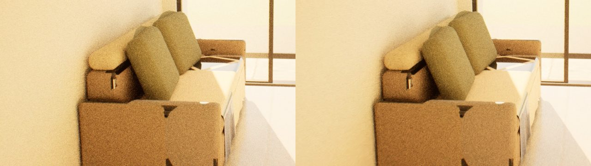
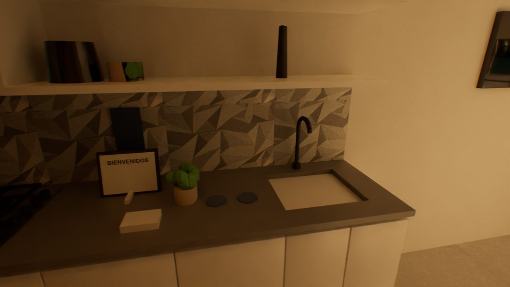
El denoiser que trae Unreal devolvía cuadros negros en esta tarjeta. Se cambió por el de Intel (OIDN) con dos líneas de consola, y con solo 32 rayos por píxel la imagen sale limpia.
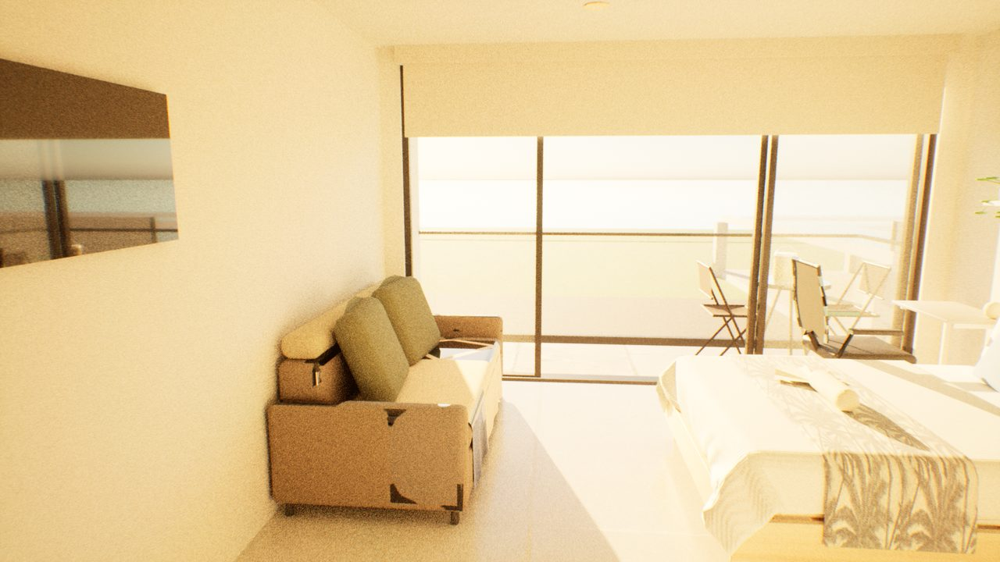
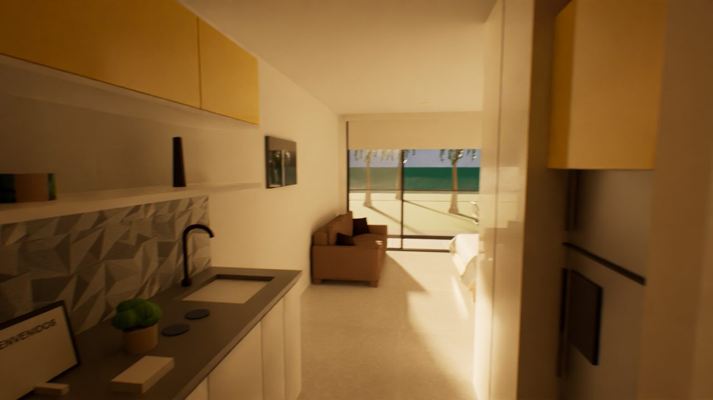
El render usaba las cámaras de Lumen, con 2,5 pasos de exposición de más. El Path Tracer recibió cámaras propias y los blancos recuperaron el detalle.
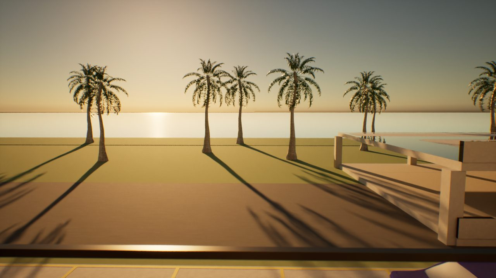
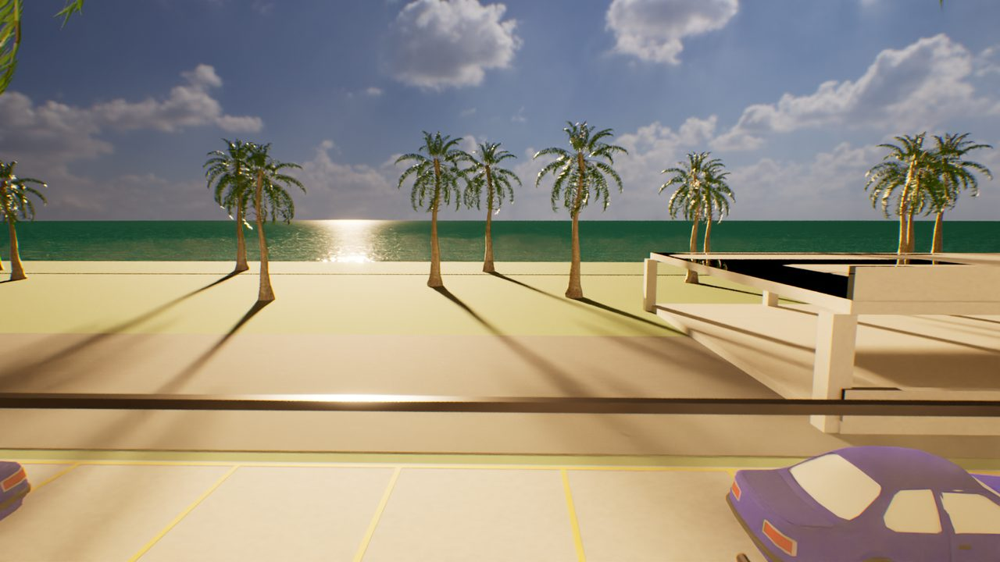
El cielo pasó a ser un domo con una foto HDR de nubes. El mar usa un mapa de olas generado por código, con reflejo del sol que se mueve.
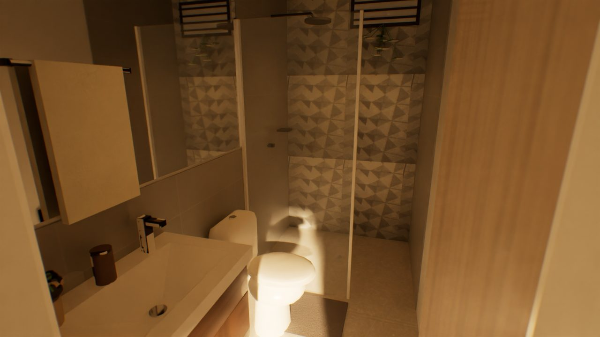
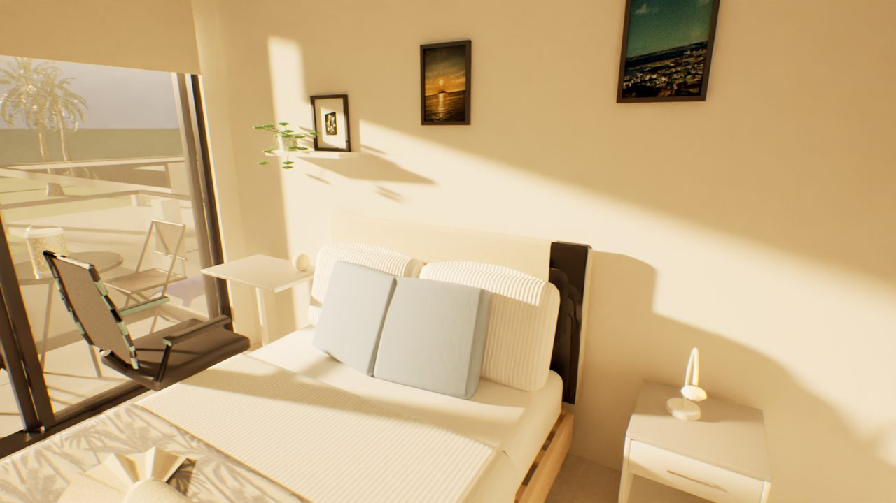
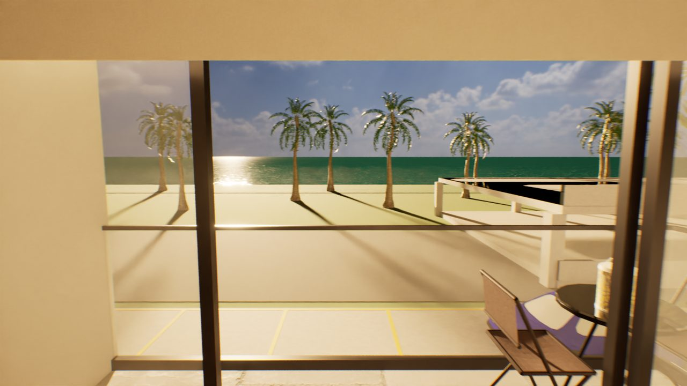
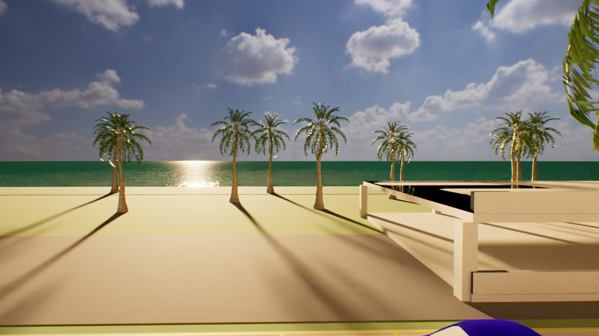
7 fotos y el plano 1:20. Cada foto se volvió una cámara para comparar render contra realidad.
Python que construye muros, muebles y materiales (OpenHouse 3D). Nada se dibuja a mano.
Otro modelo de IA califica cada versión contra las fotos; sus críticas se verifican antes de corregir.
El modelo horneado a GLB entra por scripts: luces, cielo, mar, modelos de Fab y la cámara.
Render en la RTX como tarea programada, denoiser de Intel y ffmpeg al MP4.
Al final, un modelo independiente revisó el video contra las fotos reales. Esto dijo:
Los interiores con sol llegan a 5: "archviz decente". El exterior baja la nota.
Acierta en distribución, baño, cama y cuadros. Falla en la vista del balcón y en el sofá.
Comparte el tono dorado y el plano secuencia; le falta utilería y luz más difusa.
La auditoría dejó claro que mirar no alcanzaba. En esta etapa cada cambio se mide contra las fotos del anuncio: escala, cámaras, color y luz salen de cálculos, y el color se compara objeto por objeto en CIELAB. La medida es el dE: menos de 5 es casi igual, más de 10 ya es otro color. La página muestra solo renders; las fotos del anuncio quedan privadas.
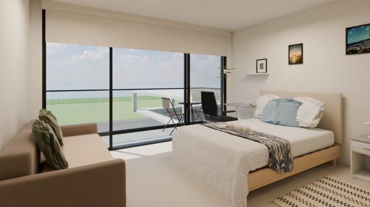
Cámara de venta nivelada y luz de estudio. Las telas por código se ven como papel o plástico.
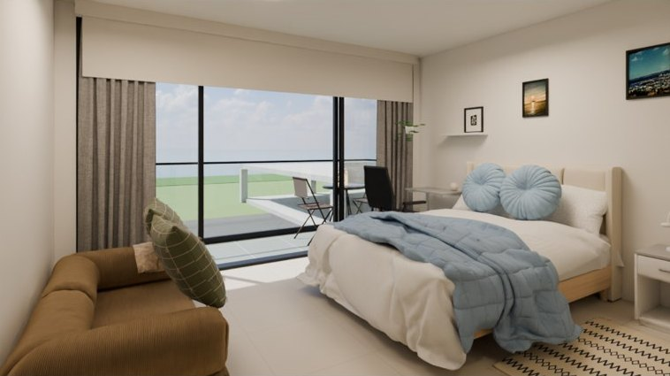
Ropa de cama, cortinas, cojines y materiales del sofá de BlenderKit. El exterior seguía siendo un plano verde.
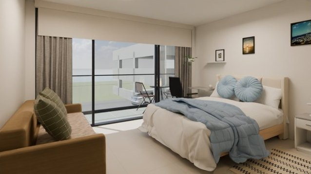
Parqueo de dos niveles con autos, pasto oliva y cielo con nubes en vez de palmeras inventadas.
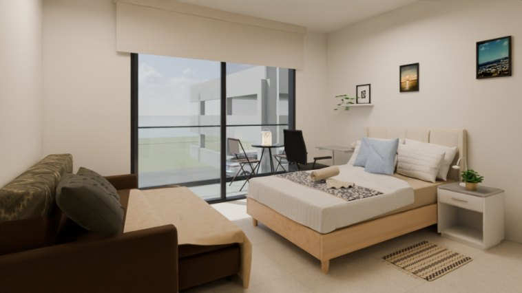
Cama de 1,20 como la real, montaje de la foto, sofá cama extendido, manta de tela y luz medida.
Arma la escena y revisa en 10 s medidas contra el plano, objetos flotando, choques y piezas dentro de las paredes. Pasó de 14 fallas a 0. Encontró cosas que nadie veía: un cojín 40 cm dentro de la pared, la barra de la cortina metida en el techo, el colchón dentro del cabecero.
La posición y la lente de cada foto se calculan con las juntas del piso (puntos de fuga, error de 0,5 px), con GeoCalib y con puntos conocidos (PnP). Antes se ubicaban a ojo. La foto 1 tenía la cámara 4° ladeada y 22 cm más baja de lo supuesto.
Las baldosas de 60×60 sirven de regla: el techo mide 2,72 m (se suponía 2,50) y la cama es de 1,20, no de 1,40. Así las alturas y proporciones calzan en todas las fotos.
El ventanal no va de muro a muro: deja 86 cm de pared a un lado. Además, la persiana baja menos, la alfombra es la mitad de grande y la mesa de noche estaba 27 cm corrida. Todo salió de comparar siluetas, no de mirar.
Ajustando su silueta, el sofá resultó tener 1,40 m de fondo y no 0,92: en la foto está extendido. Además brillaba con luz propia por un error del material descargado. Los colores ahora salen de medir la foto.
Colcha acolchada con costuras a lo largo, doblada en diagonal sobre una sábana caqui, toalla enrollada en moño, almohadas con costura y cojines azules recostados que se hunden en la cama.
Cada lámpara se renderiza por separado y la mezcla se calcula contra la foto. Hallazgo: las luces de estudio aportaban el 60 % de la luz y el cuarto real no tiene ninguna. Se quitaron, y el dE de la vista de la cama bajó de 11,9 a 8,1.
Cada mueble y cada tela se compara en color con la foto, con un mapa que dice qué píxel es qué objeto. Vista del cuarto: dE 18,4 → 13,8. Vista de la cama: 11,9 → 8,7.
Se midió cuánta variación tiene cada tela en la foto, por tamaño de detalle. Igualarla con ruido dejó manchas de humedad: la cifra dice cuánto, no qué forma. Las telas quedaron con grano fino y el relieve sale de costuras y pliegues.
Pasto oliva con manchas, parqueo de dos niveles con autos, bruma hacia el horizonte y nubes visibles: la cámara ve el cielo al 55 % de la fuerza con que ilumina, así no se quema.
La manta del sofá cae con simulación de tela (dE 9,2 → 2,6) y los cojines tienen el pliegue de la funda. Abajo, el antes y después.
Fallaron el sofá generado por IA a partir de una foto del producto (salió deformado) y los focos de cono angosto para explicar un piso naranja. También la curva de color del celular. Quedan anotados para no repetirlos.
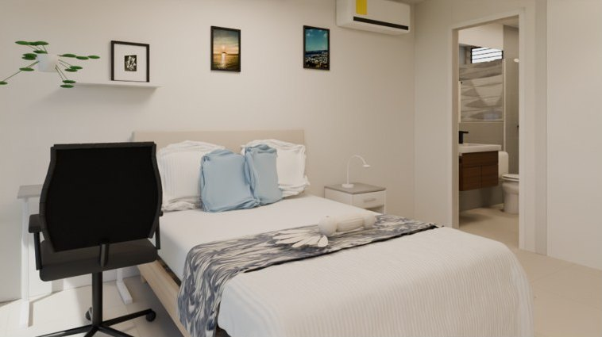
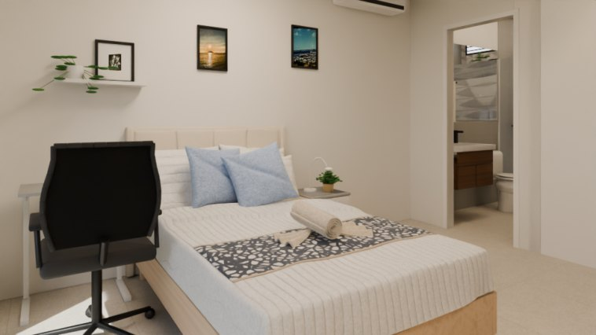
Misma cámara de venta. Antes eran telas por código, que parecían papel arrugado. Ahora la cama mide 1,20 como la real y tiene la colcha acolchada, el camino estampado, la toalla en moño y los cojines de las fotos del anuncio.
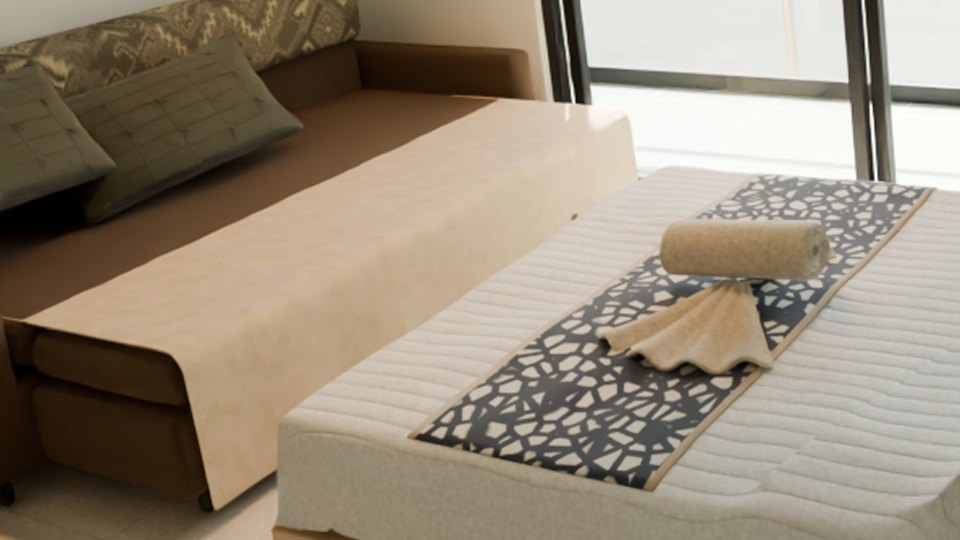
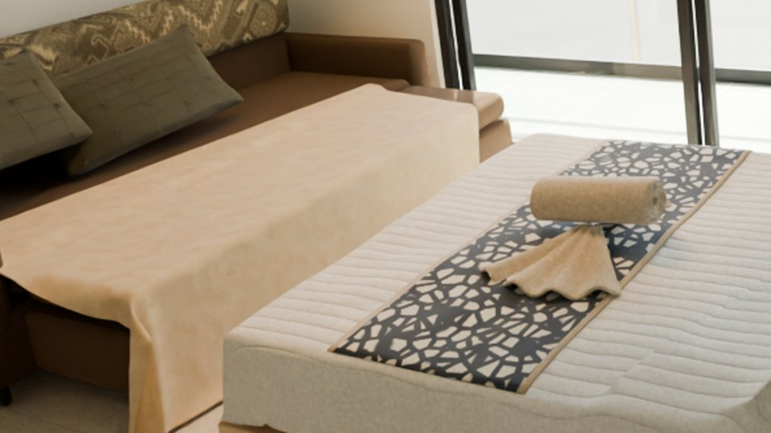
Tenía una forma calculada a mano: borde recto y caída rígida. Ahora la deja caer un simulador de tela sobre cajas invisibles con la forma del sofá. El primer intento se resbaló entero al piso; sujetar la franja de atrás, como hace el roce de una manta real, lo resolvió. Color contra la foto: dE 9,2 → 2,6.
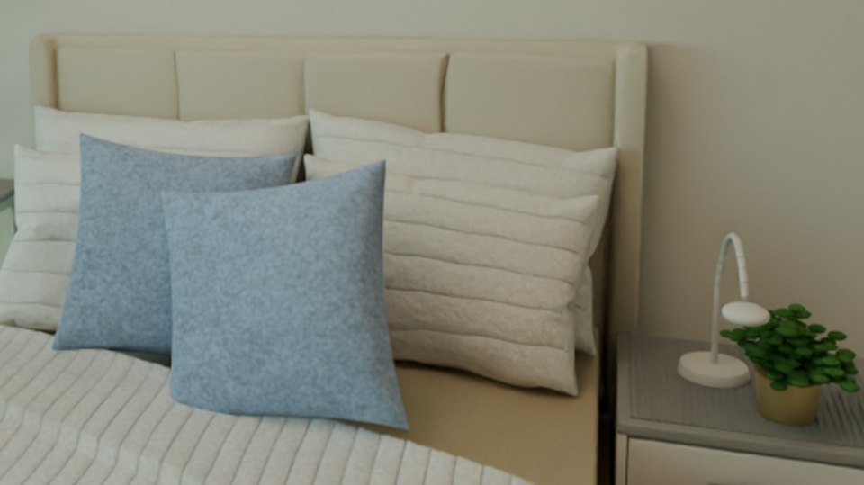
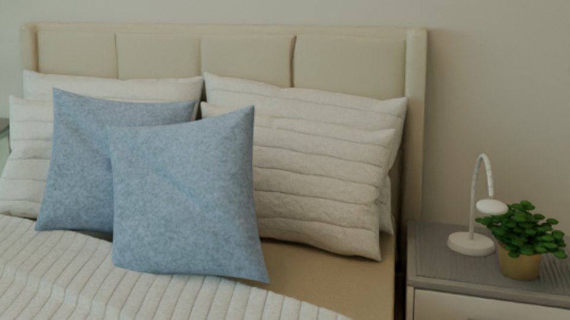
El relieve estaba, pero tan suave que no se veía a esa distancia. Se duplicaron las abolladuras y se agregó el pliegue diagonal que forma la funda cuando el relleno se dobla. Todavía es más sutil que en la foto.
En una foto el piso sale mucho más naranja que en el modelo y las paredes no. Se probó con focos de cono angosto y con la curva de color del celular: ninguna mezcla de luces lo explica sin empeorar otra cosa, y en la otra foto ese mismo piso calza. Se dejó como está.
Igualar la "cantidad de textura" de las telas con ruido aleatorio dejó manchas de humedad. Los pliegues tienen que salir de la forma, no del ruido.
Ropa de cama, cortinas, plantas y decoración vienen de bibliotecas con licencia (BlenderKit y Poly Haven). El código queda para lo que manda el plano.
Nada de esto se ajustó a ojo. La forma sale de geometría proyectiva y de ajustar siluetas; el color, de medir cada objeto en un espacio de color perceptual y resolver la luz como un sistema de ecuaciones. Cada fórmula de abajo es código que corre y deja un número.
Las juntas del piso, los rieles y los parantes son rectas paralelas en el cuarto; en la foto se cortan en tres puntos de fuga v. Como esas tres direcciones son perpendiculares, de ellas sale la lente f, el giro y la inclinación de la cámara. Control: el centro óptico calculado c cae a 10 px del centro de la foto.
Ajuste de las rectas: 0,5 px de error. Lente 14,5 mm, cámara ladeada 4,1°.
Una homografía H lleva la cuadrícula de juntas del piso a la foto. Con ella, cualquier punto del piso se mide en baldosas: de la pata de la cama a la pared hay 3,39 baldosas. Con una cama estándar de 2,0 m, la baldosa mide 0,59 m, es decir 60×60.
Techo 2,72 m (se suponía 2,50), cámara a 1,63 m, cama de 1,20.
La silueta del mueble en el modelo (A) se mueve, gira y escala hasta superponerse lo más posible con su silueta en la foto (B), con el método de Nelder–Mead. Los píxeles de otro mueble que lo tapa no cuentan.
Sofá IoU 0,75 → 0,93 (fondo 0,92 → 1,43 m: estaba extendido). Mesa de noche 0,70 → 0,96 (27 cm corrida).
La forma base se hincha al centro y se hunde en las costuras. Encima van abolladuras anchas a (senos de baja frecuencia), arrugas en abanico desde cada esquina e = e−r/0,35·cos 6θ, y un pliegue diagonal p = −e−(d/0,09)² donde el relleno se dobla.
Abolladuras de 16 % a 30 % del grosor y pliegue nuevo: ya se leen a la distancia de la foto.
Cada objeto se compara en CIELAB, un espacio donde la distancia se parece a lo que percibe el ojo: mediana de la foto (f) contra mediana del render (r), con un mapa que dice qué píxel es qué objeto.
Menos de 5: casi igual. De 5 a 10: se nota. Más de 10: otro color.
El factor por canal se mide en color lineal. El exponente 0,8 frena el paso: al cambiar un color cambia también la luz que rebota, y sin freno la corrección oscila en vez de converger. Converge en 2 o 3 pasadas.
Manta del sofá: ΔE 9,2 → 2,6.
La imagen es lineal en las luces: se renderiza cada lámpara sola (Ig) y se resuelven sus pesos w y tintes t contra la foto por mínimos cuadrados, en segundos y sin volver a renderizar.
Hallazgo: las luces de estudio eran el 60 % de la luz y el cuarto real no tiene ninguna.
Para cada tamaño de detalle (2, 4, 8, 16 px) se mide la variación de cada objeto con una dispersión robusta (MAD), y se descuenta el ruido del celular medido en el techo liso. Lo que falta se agrega como relieve.
Paredes y techo no necesitaban textura; colcha, piso y cojines eran 5 a 10 veces más lisos que en la foto.
1 inicio, luz de estudio · 2 mezcla lineal de luces · 3 luz física + exposición · 4 sofá medido · 5 cojines y almohadas · 6 manta de tela
| Paso | Foto 1 | Foto 5 |
|---|
La subida de 8,1 a 8,7 en la foto 5 no es un color peor: al mover cojines y almohadas, sus regiones en el mapa cayeron sobre otros objetos de la foto.
Mitad izquierda: color medio del objeto en la foto. Mitad derecha: en el render. Solo colores promedio, sin la foto.
Lo que pide una inmobiliaria: cuando un acabado se descontinúa a mitad del proyecto, el render nuevo no debería costar otro encargo al estudio. Aquí cada proyecto tiene una ficha con un código de catálogo por lugar (piso, pared de cocina). Se cambia el código, se vuelven a renderizar las mismas cámaras y en unos minutos están las imágenes nuevas.
12 s · luz de tarde · la cortina cambia la ficha A por la B en la misma toma · render en Blender Cycles en la RTX 5060 Ti
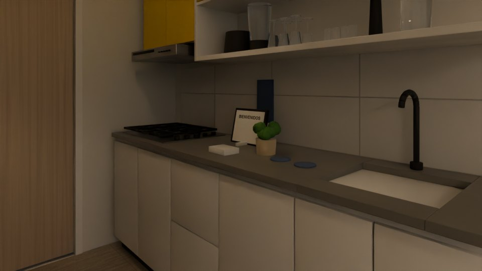
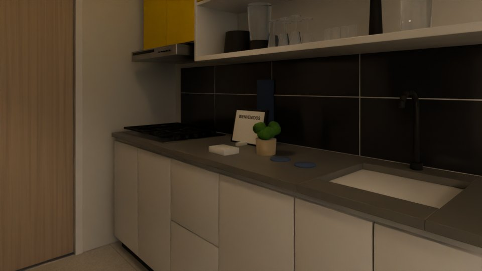
Misma cocina y misma cámara. Solo cambió el código de la pared: 110017507 (Tropic New II White, 30×60) por 110017429 (Brick New Black, 30×60). Las piezas salen a su tamaño real, con juntas y el brillo del esmalte.
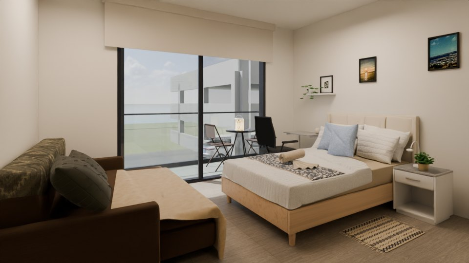
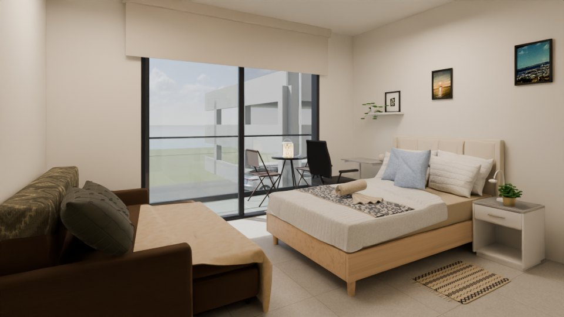
El piso pasa de 110015675 (Madera Fashion Cerezo Beige, 60×60) a 110012936 (Concreto Gris, 60×60). El símil madera se arma en piezas de 60×60 con juntas, como el porcelanato real, y no como un piso de tablas.
{"piso": "110012936", "cocina_pared": "110017429"}. Cambiar un acabado descontinuado es editar ese código; el modelo, la luz y las cámaras no se tocan.
No se usan imágenes del fabricante: son texturas libres (CC0) teñidas al color del muestrario y a la medida real de cada pieza. Para entregar a un cliente se piden las texturas oficiales al fabricante.
Confirmar los códigos contra la ficha técnica de cada producto (solo uno está confirmado), sumar los precios por m² para compras y llevar la elección a una página con selector.
Cada mejora real salió de poner render y foto lado a lado desde la misma cámara.
La pared inventada del balcón, el color del piso exterior y la posición de la regadera los detectó una persona.
Las palmeras se ven bonitas pero bajan la fidelidad: un huésped espera ver lo que va a encontrar.